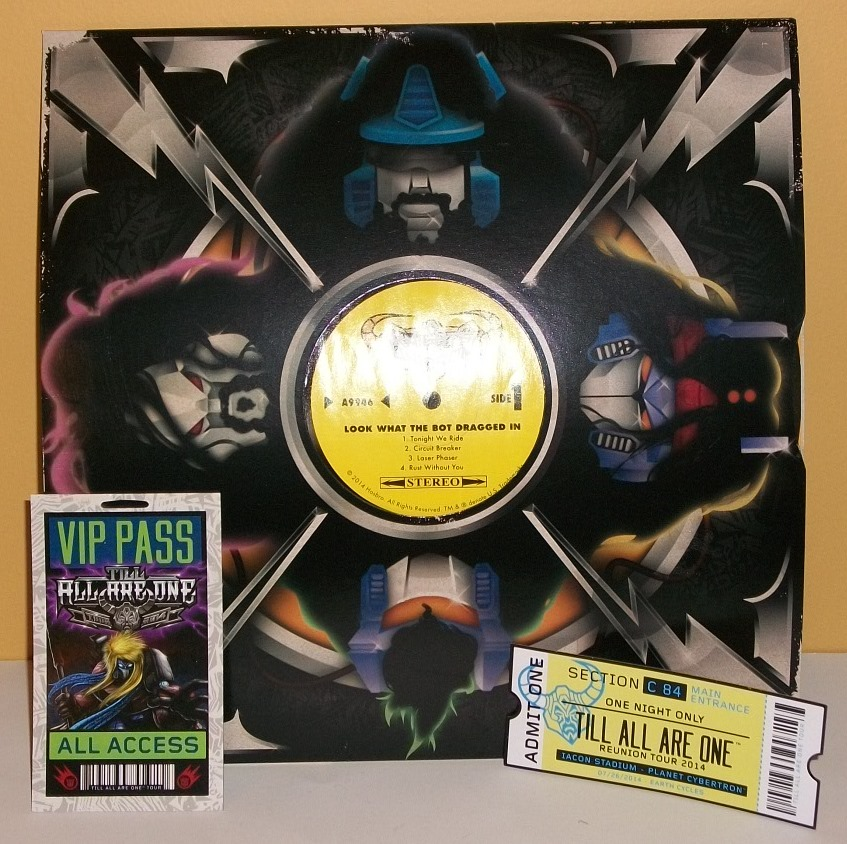

Allegiance : Decepticon
Difficulty of Transformation : Very Easy
Color Scheme : Pale red, white, and some metallic bronze
Rating : 6.9
Price
: $185 (U.S.)
Also Includes
: Large "band case"
box; smaller "speaker" box; VIP Pass; ticket; two posters; three stickers;
"record sleeve" w/ instructions & song lyrics inside
(NOTE: Because this set is composed of repaints,
this is not a full-blown review. This mainly covers any changes made to
the set and the color scheme, and merely compares it to the original versions
of these molds. For a review on Cybertronian Megatron, go
here
.
For a review FoC Optimus Prime, go
here
. For
a review on FoC Autobot Jazz, go
here
. For a
review on Cybertronian Soundwave, go
here
.
For a review on Animated Laserbeak, go
here
.
For a review on Animated Ratbat, go
here
.)
 Laserbeak
Laserbeak
Allegiance
: Decepticon
Difficulty of Transformation
: Very
Easy
Color Scheme
: Pale red, white, and
some metallic bronze
Rating
: 6.9
Laserbeak is-- interestingly
enough-- a redeco of his Animated version, which I honestly thought was
a mold we'd never see again. His color scheme, as you'd expect, is bit
wacky for this version, being primarily a pale red but with a lot of asymmetrical
angular stripes all over the place to give him a lot of visual pop. There's
also a bit of bronze used for his robot head/beak, which is also another
color that goes great against the pale red. Overall this is just a very
eye-catching guitar that fits right in with the wacky theme of this set.
No mold changes have
been made to this version of Laserbeak, but he does come with a silver
bungie strap that can allow other TFs in the set to hold him around their
shoulders to "play him". The bungie strap must be removed to transform
Laserbeak to his bird mode, however.
 Megatron
Megatron
Allegiance
: Decepticon
Size
: Deluxe
Difficulty of Transformation
: Easy
Color Scheme
: Glittery black, light
milky gray, moderately dark red, and some purple, pink, bright yellow,
bright teal, dark gray, light pale purple, and transparent light purple
Rating
: 7.7
Megatron isn't so much
of a genuine redeco in that his core plastic colors have been changed (for
the most part, at least); rather, he's his original toy with a bunch of
extra paint splashed on. And I mean "splashed" almost literally-- Megatron
has all sorts of "funfetti"-style paint splatters on his upper arms, feet,
and knees. It really helps to "zany up" what is otherwise a fairly dangerous-looking
'bot with an angry expression on his face. What REALLY helps to make this
Megatron more comical, though, is the
teal leopard print paint
"shorts"
on his waist and upper legs. Seriously, whoever thought of something both
that ugly and endearing at the same time should get a raise. (The teal
also provides some nice contrast with the black, to boot.) The rest of
"Knights of Unicron" Megatron is largely the same as his original release,
such as the placement of the gray, transparent light purple, and black
plastic, as well as most of the dull red paint apps. The only real change
with his plastic color is that the original's more chalky version of light
gray has been replaced with a more standard milky version-- which I don't
tend to like as much, and this toy is no exception to that rule. The chalky
gray looked a bit less boring, overall.
Just like the other
toys in this set, Megatron comes with some "clothes" to dress him up in--
and out of all the accessories that comes with the TFs in this set, Megatron's
are the best, in my opinion. His black vest w/ velcro stripes, zebra-print
"scarf" and large black rocker hair "wig" all frame his chest and head
in an exceedingly well, hilarious way, though the scarf feels like it's
made out of the thinnest papery-cloth imaginable; I wish it was more obviously
made of actual cloth, given the price of this set. Megatron's wig can be
a big of a pain to get around his head just right, as the bungie strap
on it has to fit in between his chin and his chest, but once you get it
right it's totally worth it. Absolutely hi-larious!
No mold changes have
been made to this version of Megatron.
 Optimus
Prime
Optimus
Prime

Allegiance
: Autobot
Size
: Deluxe
Difficulty of Transformation
: Easy
Color Scheme
: Light pale milky gray,
dark red, silver, dark blue, and some light blue, black, light sky blue,
dull military greenish blue, and light milky gray
Rating
: 8.6
Optimus Prime keeps his
primary colors of dark red and blue, but their placement is a little different
than on his original FoC toy, with the red solely on his chest and lower
arms (and a darker, duller shade than on his original release), while his
dark blue plastic is for his waist and upper legs, with some dark blue
paint showing up only on his wheels in vehicle mode. A very light, pale
milky gray plastic makes up his lower legs, with some nice light sky blue
paint complementing them and keeping those pieces from looking too blah.
He also has a bit of regular light milky gray for his smokestacks and front
grill, but it's used very minimally. The amount of silver paint on this
guy is amazing-- not only are the expected details on his faceplate and
head vents painted silver, but also his entire shoulders and upper arms,
as well as a VERY intricate tiger-stripe pattern on his main body and lower
arms, which all works very well with the dark red background and, of course,
makes him look considerably more goofy and fitting for an '80s rock band.
There's also a quite intricate zebra-pattern paint design on the front
of his upper legs, the odd shade of military green-blue both contrasting
and complementing against the dark blue plastic quite well (though it could've
stood to be a LITTLE brighter). To top off all this paint goofiness, there's
also a heart painted on his front chest with "ARCEE" on it-- if you read
the pamphlet that comes with the set, the story is that Arcee is sort of
like the Yoko Ono that broke up the band and started the Great War, an
utterly hilarious and ingenious idea in and of itself.
Optimus Prime comes
with some pretty nice little clothing accessories, though as with the other
figures in the set, you have to remove them during transformation. He's
got some really cool strips of cloth that hang off his lower arms like
he's wearing one of those '80s leather rocker jackets, and he also has
a blue leopard-printed scarf with some tassels that's also unfortunately
paper-thin. To emphasize he's the "leader" of the band, Optimus comes with
a white wig instead of the black ones the other guys get, and it fits him
and his color scheme surprisingly well-- though the bungie strap on mine
snapped the first time I tried to take it off. Grrr. He also has a little
velcro belt, though it's not that big and is easily forgotten about. All
in all, more hilarious, generally well-thought-out clothing extras.
No mold changes have
been made to this version of Optimus Prime, though he does come with an
extra microphone accessory that can be held in either hand.
 Smooth
Jazz
Smooth
Jazz
Allegiance
: Autobot
Size
: Deluxe
Difficulty of Transformation
: Easy
Color Scheme
: White, moderately
dark dull blue, black, and some dark metallic gunmetal gray, milky semi-metallic
gray, light sky blue, and sea foam green
Rating
: 7.1
Out of all the "main
four" TFs in this set, Jazz is definitely the one that has the biggest
color change. (I also love how they dropped the "Autobot" copyright-workaround
part of his name and replaced it with "Smooth"-- brilliant.) Smooth Jazz'
main colors-- when listed-- seem to be roughly the same as his traditional
color scheme, with white, black, and blue being his dominant shades. However,
they're in pretty different places. A dull dark shade of blue dominates
his vehicle mode and upper half of his robot mode, and serves as a nice
base plastic color for his other colors to play off of. The white stripes
on his top in vehicle mode help to "crazy up" his colors a bit there, as
do the awesome black-and-white zebra-striped "pants" in robot mode. The
white just looks really nice against Smooth Jazz' otherwise dark color
scheme. Another big plus is the really nice shade of sea foam green paint
that's mostly used for the front of his car mode/robot chest, which both
contrasts and complements the dark blue extremely well. I wish it was used
a tad more, honestly (though the usage of it on the sides of his car wheels
is another nice use). For smaller "connector" parts like the middle of
his arms, parts of his shoulders and innards, and hands, Smooth Jazz also
has a milky gray-- but thankfully, it's a medium, semi-metallic shade of
the color so it doesn't look bland or anything, particularly in the sparse
amounts that it's used. The metallic gunmetal gray paint on Jazz' lower
feet and back "engine" part of his vehicle mode also looks boss and is
a nice complement to this gray plastic.
Smooth Jazz comes with
a large spiky black "wig" accessory to put around his head, along with
a zebra-striped tasseled scarf that unfortunately is just as paper-thin
as most of the other clothing accessories in this set. The scarf goes a
long way towards making that huge unsightly gap in between this mold's
chest and head less noticeable, though it still is pretty obvious.
No mold changes have
been made to Smooth Jazz.
 Ratbat
Ratbat

Allegiance
: Decepticon
Difficulty of Transformation
: Very
Easy
Color Scheme
: Black, pale lavender,
and some light red and pale metallic gold
Rating
: 4.6
Ratbat has exactly the
same paint apps as this mold's original release with Electrostatic Soundwave,
but with added gold stripes. I LIKE the added stripes-- it helps Ratbat
fit in a bit better in an '80s metal band and gives him some extra contrast--
but I find it a bit lame that everything else was kept the same. It's a
good scheme, but they should have changed his colors around a bit for an
expensive exclusive release such as this.
No mold changes have
been made to this version of Ratbat, though like Laserbeak, he comes with
a silver bungie strap that can secure him around other TFs in the set and
let them "play" him. This strap has to be removed to let him transform,
though.
 Soundwave
Soundwave
Allegiance
: Decepticon
Size
: Deluxe
Difficulty of Transformation
: Medium
Color Scheme
: Dark purplish blue,
black, and some very light milky gray, bright orange, silver, ckear plastic,
and white
Rating
: 7.7
It seems like the Decepticons
in this set don't get as much of a color change as the Autobots do-- Soundwave
still largely retains his blue in the same places as it was on the original
version of this toy, though on this version the blue is a noticeably darker
color that's about halfway between blue and purple, really. Largely it
has the same effect. The more noticeable difference-- in terms of plastic
color-- is that much of the gray on Cybertronian Soundwave has been replaced
with black on this version. This lessens the contrast and darkens up the
colors even more, but I didn't like how much gray was on the original version
of this mold, so it's a net positive for me. There's still a little bit
of light milky gray plastic on this version of Soundwave, but it's relegated
to just his wheels and front bumper/claw thing. The rest of the "gray"
on Soundwave are silver paint apps, which look particularly good on his
forearms and shoulders, where they contrast with the dark blue-purple and
black excellently. Soundwave also has white paint on his feet, again to
help lighten up his color scheme a bit-- they actually look a bit like
special custom loud '80s rocker shoes, with the way they're painted. Soundwave
definitely has the least zany color scheme of the 'bots on this set, but
the usage of bright orange on such areas like his wheel hubs, shoulders,
chest, and knees ensures not only that he's a bit loud but that he also
has some great contrast on all sections of the toy. On one small additional
note, a neat little extra detail is that on Soundwave's lower left arm,
he has a Laserbeak "tattoo" with a stylized "Till All Are One" logo below
it.
Soundwave comes with
the weakest of the extra accessories in this set-- he has a wig like the
others, but it's a relatively tiny black one that's supposed to be a mohawk.
The "hair" frizzes out on all directions so it doesn't look all that much
like one, and it doesn't completely cover the top of his head, with the
bungie strap more obvious on him. He also has a yellow scarf that comes
tied around his left arm, which is a decent enough accessory that provides
more contrast and can actually stay on in vehicle mode, so you don't need
to worry about un-tying and re-tying it everytime you want to transform
him.
No mold changes have
been made to this version of Soundwave, though like Optimus, he comes with
an extra microphone accessory that can be held in either hand.

It's also worth mentioning--
because of the steep price-- that toys with little clothing accessories
aren't all that this set comes with-- far from it. It comes in a big box
made to look like a band music case, complete with "latches" that magnetically
connect to the bottom part of the case when closed up-- a small thing,
but rather nice. Inside the case is also a large box that looks like a
speaker, a fake "ticket" for the "Till All Are One" Reunion tour, and a
"VIP pass" badge complete with a hole near the top if you want to make
it into a lanyard. Also included are two posters-- one that looks like
a tour poster with Knights Optimus on the front, and one that looks more
like something you'd see outside a theater that shows off artwork of Knights
Megatron and advertises the "Sold Out" Reunion tour. There's also three
fairly high-quality stickers that are included, including the full Knights
of Unicron Reunion Tour logo, the Knights of Unicron "emblem", and the
"Bumblebee and the Hive" emblem. If you're confused about the latter, you
can read all about it in the pamphlet-book included that outlines the history
of the Knights of Unicron like a band documentary. All of these extras
are extremely well-done, with little fan call-outs everywhere, especially
in the hilarious backstory booklet-- to give one of the less obscure examples,
the ticket lists the concert as taking place at "Iacon Stadium". The best
extra of all, though is the "record cover", which has the heads of the
four Knights of Unicron on the front, as well a love-note from Chromia
on the back complete with her "phone number". What's inside? Not a full
record, but the next best thing-- the instruction sheets! Now before you
say "so what", beyond the actual instructions-- which refer to the different
modes as "Tour Mode" and "Rockin' Mode" (vehicle and robot)-- there's also
a fake record front with titles of the songs on that "side" and on the
back there are the
entire lyrics
to fake songs by the Knights of
Unicron, all based off of classic rock hits. The only complaint I have
about the extras is the same complaint I have about the clothing extras--
they're a bit thin and flimsy for the most part. The record sleeve could
stand to be thicker and the VIP pass laminated, for example. Underneath
all the extras at the bottom of the box are the figures themselves, laid
out in black foam just like the Fun Publications-era Botcon exclusive sets.
The "Knights of Unicron" set is definitely the zaniest Transformers San Diego Comic-Con exclusive to date, and it commands a steep price because of all the extra accessories and stuff like the posters, VIP pass, extra boxes/packaging, and fake record. Because of this, despite the extreme inventiveness of the set, I'd only recommend getting this if you're A. REALLY into this idea and care about more than just the figures and paint jobs, or B. Find it all for a pretty nice discount. I love it, but I get that there's a lot of people out there that really don't like TF releases getting quite this wacky-- this one definitely has a set audience.
Reviews by Beastbot